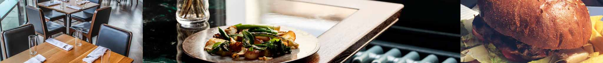

Menu
APPETIZERS
REWENA BREAD 10
Traditional Māori bread.
PAUA FRITTER 16
Finely diced pieces of paua, served with a side salad and horopito dressing.
RAW FISH 20
Dried snapper fish marinated in coconut cream, served with tomatoes and spring onions.
POACHED SALMON 22
Salmon poached in an orange and pistachio glaze, served with rewena bread.
SEAFOOD BASKET 25
Crumbed mussels, salt and pepper squid, crumbed hoki bites and garlic prawns
MAIN
FISH OF THE DAY 25
Beer battered fish and kumara fries, served with a side salad and homemade tartare.
MUSSELS AND SCALLOPS 25
Steamed mussel & scallop mousse, honey and soy broth.
SEAFOOD CHOWDER 30
Creamy chowder filled with terakihi, prawn, hoki, scallops and mussels, served with flatbread.
PORK BELLY 30
Slow cooked pork belly served on a bed of apple slaw with roasted kumara, and crispy noodle.
LAMB STEAK 33
New Zealand Lamb coated in a kawakawa crumb, served with Dijon mustard glazed carrots, roasted butternut
squash and a mushroom Jus.
VENISON 33
Venison crusted with horopito, served with glazed plums, cabbage salad and red wine Jus.
DESSERT
KĀPITI ICE CREAM 10
Check for daily specials.
STEAM PUDDING 12
Golden syrup flavoured steam pudding, served with vanilla ice cream
MINI PAVLOVA 16
Mini Pavlova served with kawakawa and lemon infused cream and fresh fruit.
BANOFFEE PIE 16
Toffee, fresh bananas and fresh cream.
BEVERAGES
RED (B/G)
Terrace Edge Pinot Noir, 2012, Wairarapa 53/13
Altitude Pinot Noir, 2010, Marlborough 64/15
Greystone Pinot Noir, 2012, Wairarapa 73/17
Terrace Edge, Syrah, 2012 Wairarapa 53/13
Altitude Syrah, 2010 Marlborough 64/15
Greystone Syrah, 2012, Wairarapa 73/17
Pegasus Bay Merlot, 2013, Waipara 65/14
Pegasus Bay Pinot Noir, 2013, Waipara 110
WHITE (B/G)
Spade Oak Pinot Gris, 2011, Gisborne 40/10
Maude Pinot Gris, 2017, Otago 49.50/11
Charles Wiffen Chardonnay, 2013, Otago 48/11
Amisfield, Riesling, 2016, Otago 53/12
Lamont Riesling, 2010, Otago 57/13
Elephant Hill Viognier, 2013, Hawkes Bay 55/12
Folium Sauvignon Blanc, 2011, Marlborough 52/11
Billecart-Salmon Brut Reserve, France 120
BEER AND CIDER
Garage project range 11
Tuatara range 11
Panhead range 10
Coopers Ale 10
Heineken 11
Moa Cider 10
Crooked Cider 10
NON-ALCOHOLIC
Mineral water 4.00
Soft drinks 4.00
Juice 4.00
Coffee 4.50
Tea 3.50